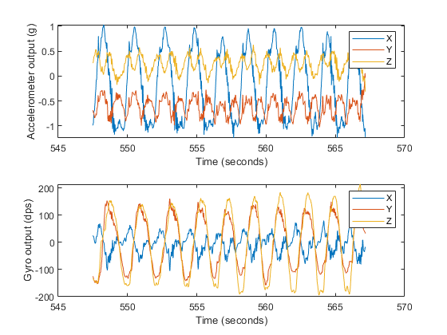
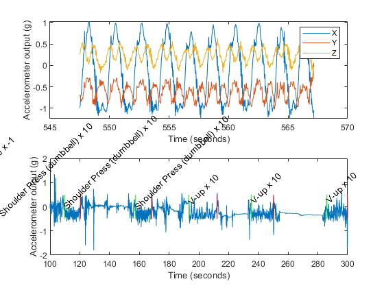

Overview
This data set contains accelerometer and gyroscope recordings from over 200 participants performing various gym exercises.
This data set is described in more detail in the associated manuscript: Morris, D., Saponas, T. S., Guillory, A., & Kelner, I. (2014, April). RecoFit: using a wearable sensor to find, recognize, and count repetitive exercises. In Proceedings of the SIGCHI Conference on Human Factors in Computing Systems (pp. 3225-3234). ACM.
Contact ssaponas@microsoft.com if you have questions about this data set.
The remainder of this document presents the contents of load_exercise_data.m, a Matlab script that walks you through the format of the data.
Contents
- Constants and environment
- Load data... this will take a couple minutes; it's about 2.5GB
- Find the column for a particular exercise we want to look at
- This matrix has one row per person, one column per exercise
- Now let's look at one instance of this particular subject doing this particular exercise
- Now let's play around with the multi-activity data
Constants and environment
%#ok<*NBRAK> dataBaseDir = 'D:\temp\exercise_data_release'; % This file has *only* data during exercises, already separated out by exercise. % The "singleonly" in the filename means that it only contains "single-activity" traces. % So this is useful for the "which exercise?" (recognition) and counting problems, not for % the "when is there exercise?" problem. dataFileSingleActivity = fullfile(dataBaseDir,'exercise_data.50.0000_singleonly.mat'); % This file has data from complete exercise sessions, so it includes lots of time % where there's no execise happening. The "multionly" in the filename means that it % only contains "multi-activity" traces. So this is useful for the "when are you % exercising?" problem (segmentation). dataFileMultiActivity = fullfile(dataBaseDir,'exercise_data.50.0000_multionly.mat'); % We separate these into two files to make it a little easier to work on % one problem or the other. You can completely reconstruct the % "single-activity" file *from* the "multi-activity" file, because it also % includes all the times at which each exercise started and stopped. % In this file, we're going to play around with data from a particular % subject doing a particular exercise. Not every subject did every % exercise; I'm picking a combination that I happen to know isn't empty. % In fact I'm also picking a subject that I happen to know participated % more than once. iSubject = 52; exerciseName = 'Two-arm Dumbbell Curl (both arms, not alternating)';
Load data... this will take a couple minutes; it's about 2.5GB
fprintf(1,'Loading single-activity data...\n'); exerciseDataSingleActivity = load(dataFileSingleActivity); fprintf(1,'Loading multi-activity data...\n'); exerciseDataMultiActivity = load(dataFileMultiActivity); fprintf(1,'Finished loading data\n'); % Both of these files have similar formats format... the data lives in a cell % matrix called "subject_data", where each row is a subject, and each column % is a type of exercise. % % In the "multi-activity" data, there's only one column, since we haven't separated % data out into exercises yet. % The column names for the single-activity data are here: activities = exerciseDataSingleActivity.exerciseConstants.activities'; nActivityTypes = length(activities); % Sanity-check our data matrices assert(nActivityTypes == size(exerciseDataSingleActivity.subject_data,2)); assert(1 == size(exerciseDataMultiActivity.subject_data,2)); % Both files should have the same number of subjects nParticipants = size(exerciseDataSingleActivity.subject_data,1); assert(nParticipants == size(exerciseDataMultiActivity.subject_data,1));
Loading single-activity data... Loading multi-activity data... Finished loading data
Find the column for a particular exercise we want to look at
exerciseIndex = find(strcmp(exerciseDataSingleActivity.exerciseConstants.activities,...
exerciseName));
This matrix has one row per person, one column per exercise
% Any given cell in "subject_data" is a struct array, with one element for % each time that subject (this row) performed that exercise (this column) % % So for example, the following cell contains a struct array, with one element per % record, of every time this subject came in to our lab and did the exercise we picked % above, which may span multiple visits. recordings = exerciseDataSingleActivity.subject_data{iSubject,exerciseIndex}; % How many times did this subject do this particular exercise? nRecordings = length(recordings);
Now let's look at one instance of this particular subject doing this particular exercise
% Arbitrarily grab the first instance to plot recording = recordings(1); assert(strcmp(recording.activityName,exerciseName)); % Plot the raw accelerometer and gyro data (at 50Hz) accelT = recording.data.accelDataMatrix(:,1); accelXYZ = recording.data.accelDataMatrix(:,[2:4]); gyroT = recording.data.gyroDataMatrix(:,1); gyroXYZ = recording.data.gyroDataMatrix(:,[2:4]); subplot(2,1,1); plot(accelT,accelXYZ); xlabel('Time (seconds)'); ylabel('Accelerometer output (g)'); legend({'X','Y','Z'}); subplot(2,1,2); plot(gyroT,gyroXYZ); xlabel('Time (seconds)'); ylabel('Gyro output (dps)'); legend({'X','Y','Z'});
Now let's play around with the multi-activity data
% Remember, in this file, we haven't separated out the periods of exercise % and non-exercise, everything is one big long trace per subject, with % labels to tell us where exercises started and stopped. recordings = exerciseDataMultiActivity.subject_data{iSubject,1}; % Each instance here represents a visit to our lab nVisits = length(recordings); % Arbitrarily grab the first visit recording = recordings(1); % This is a cell matrix that tells us when exercises started and stopped, % and how many repetitions the subject did for each exercise. The columns % are: % % [exercise name],[start time],[end time],[notes],[number of repetitions] % So let's plot this subject's accelerometer data (just one axis, so the plot % doesn't get too complex), with vertical lines to indicate where exercises % started, with labels for each exercise. nActivities = size(recording.activityStartMatrix,1); accelT = recording.data.accelDataMatrix(:,1); accelZ = recording.data.accelDataMatrix(:,4); plot(accelT,accelZ); hold on; xlabel('Time (seconds)'); ylabel('Accelerometer output (g)'); for(iActivity=1:nActivities) activityName = recording.activityStartMatrix{iActivity,1}; if (strcmpi(activityName,'non-exercise')) continue; end activityCount = recording.activityStartMatrix{iActivity,5}; activityStartTime = recording.activityStartMatrix{iActivity,2}; activityEndTime = recording.activityStartMatrix{iActivity,3}; lineHandle = line([activityStartTime activityStartTime],[-0.5 0.5]); lineHandle.Color = [0 1 0]; lineHandle = line([activityEndTime activityEndTime],[-0.5 0.5]); lineHandle.Color = [1 0 0]; yValue = -0.5 + rand(); tHandle = text(activityStartTime,yValue,sprintf('%s x %d',activityName,activityCount)); tHandle.Rotation = 45; end % ...for each activity hold off; zoom on; xlim([100 300])